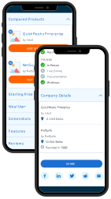

Mobile Comparison Table
I redesigned Capterra's data-heavy, dynamic comparison table to provide a faster, more readable, and more useful experience for our mobile users.
TLDR: Redesigned Capterra's main comparison table specifically to encourage mobile engagement and conversion.
- Role: Lead UI Designer
- Software Used: Figma, Illustrator, Axure
- 100% of users frictionlessly chose the correct software for their needs
- Users took 20% less time to choose a software option

The Problem
Capterra’s software comparison table is one of its most helpful tools. However, mobile users had a difficult time interacting with the table; the horizontal scrolling and sticky elements were inaccessible, glitchy, and not ideal for comparing many data points at one time.
One of Capterra's strongest features is its software product comparison table. However, the table, like many complicated data displays, was never optimized for mobile viewers. In fact, up until Google rolled out mobile-first-indexing, the comparison table was not even accessible for mobile users.
One of the major issues was that users had a hard time getting a holistic view of the comparison. Because you could barely fit two columns per mobile screen, users were forced to do a lot of scrolling to compare, for example, the first column with the fourth column. Additionally, the labels for the rows did not stay visible while the user scrolled meaning that you could get to the fourth column and have no obvious indicator of what the section you’re looking at even is. On top of these frustrating features, the table itself was glitchy and slow; poor page performance consistently resulted in higher bounce rates and lower interaction rates.
Research Findings
We first surveyed dozens of competitors, market leaders, ecommerce sites, and online marketplaces’ approaches to mobile comparisons and found that no clear consensus exists as to the best approach for this challenge. Instead, we ideated something new.
A partner UX designer and I started this project by scouring the internet to find other examples of complex data tables on mobile, watching Hotjar recordings of our users interact with the live template, and completing moderated interviews of buyers in the process of comparing software.
It was simple enough to identify which data points were most important to users (pricing, reviews, features, etc.), but it was more of a challenge to find out how users wanted to view this information. For example, we found that users could navigate the horizontal scroll table, but that it wasn't a pleasant experience - especially on a slow internet connection.
Next, we hosted an ideation session with the design team, our product manager, and the scrum team assigned to the project. The group sketched and pitched a number of approaches, from simply improving the current table to feel better and have improved stickiness, to utilizing the phone’s landscape mode for better holistic viewing. We decided to prototype and test an approach that would remove the need for horizontal scrolling all together.

Prototyping & User Testing
We tested this design to ensure that users were able to easily and intuitively use the product, as well as to accomplish their goal without interruption or confusion. We went through many rounds of testing and interating to land on a design that worked for our users.
After ideation, I mocked up the new approach: breaking the table apart into discrete accordions so that users can compare products across one data point at a time. This design has the advantage of "chunking" information into smaller pieces, and provides an experience that is more accessible to all users.
Before testing this design with live traffic, we ran a series of unmoderated usability tests on the new interactions and features. Our driving question was: “Can users draw an informed conclusion about which product best suits their needs as compared to the other products in this list?” We additionally tested user comprehension of new functionality (like the accordions, the altered “remove product” interaction, etc.).
We found that users actually had an easier time drawing conclusions about the compared products in the accordion-style view than in the table view. Because most users have one, maybe two, very important data points that matter to their buying decision, they were able to skip right past the data points they viewed as unimportant, and get to comparing on the information that mattered to them.

The Solution
When we stopped thinking about the template as a comparison “table”, and started thinking about it as a comparison “experience”, we were able to create a product that fulfilled user needs even though it looks and acts radically different than before.
The new design for the mobile compare page is better described as a bunch of stacked micro-comparisons. Users can customize their comparison by only expanding the data points they’re interested in, and quickly removing any products that don’t meet muster. This view also allows users to easily screenshot an interesting data point, or share the whole comparison with a coworker or boss. Finally, this design provides the user with important context like row and column labels no matter where in the template they are.
Phase two of this project will be expanded to include desktop optimizations, and a subtle rearchitecture to help users better understand and navigate through Capterra. For example, this template has quickly become a major source of organic traffic from Google. For these users, this experience will be their first introduction to Capterra. User interviews show us that for these users, it is difficult to quickly understand what Capterra does, and what other tools it has to offer. Providing more context and a more obvious next step after this template will be a key improvement.
Currently, there are only two other sources of traffic to these templates. The primary user flow for Capterra’s users is to engage with the comparison page by manually creating a comparison from a main directory of products. While this has worked well for our users in the past, it falls short of being as helpful as possible. Rethinking this user flow and providing more opportunities to see popular comparisons, suggested comparisons, similar comparisons, and other relevant content will be a big step in optimizing this template.
Lastly, on the current compare template there is no ability to add products to your comparison directly from within the page. Users are directed back to a directory (even if they landed on the page from Google) to add additional product to their comparison. This user flow has performed poorly; bounce rates for users who attempt to add a product to compare is high. While optimizing the user flow for this page, we will also add the functionality to search for products to compare while on the comparison page.
While there is a lot more to be done, this MVP represents a massive improvement for Capterra’s compare page, and for its mobile experience in general.
Outcomes:
10% more users discovered the features section on the mobile compare page (75% of users say features info is important to their purchasing decision). 100% of users were able to frictionlessly choose which software best suited their needs during user testing.

Next Case Study 
D&D Character Creation App
Design System for Capterra
Developed with Love by Amelia Peacock 2020